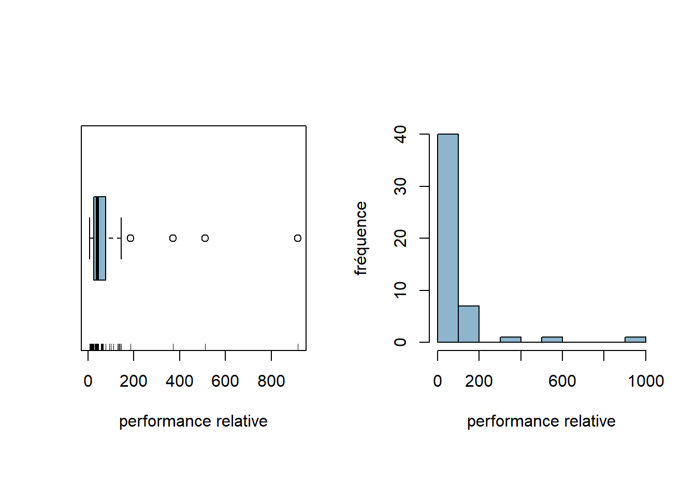
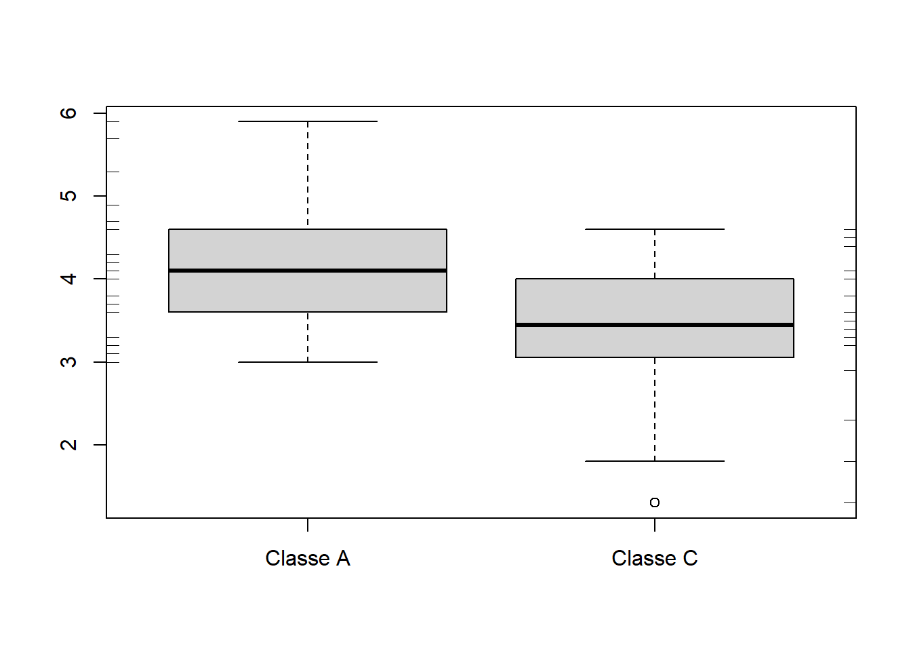
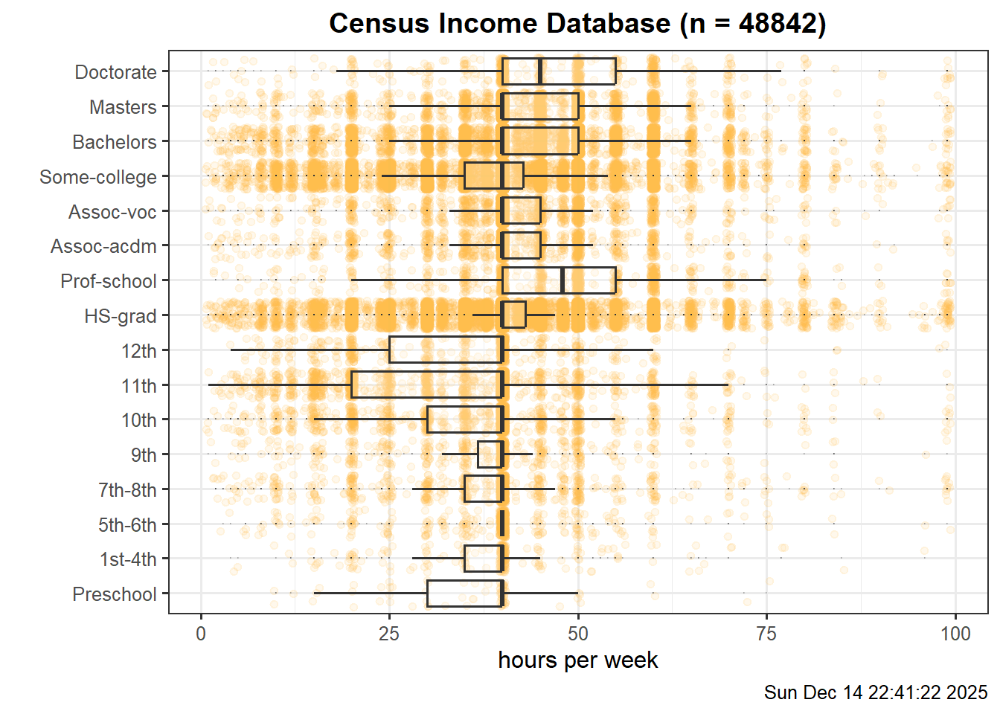
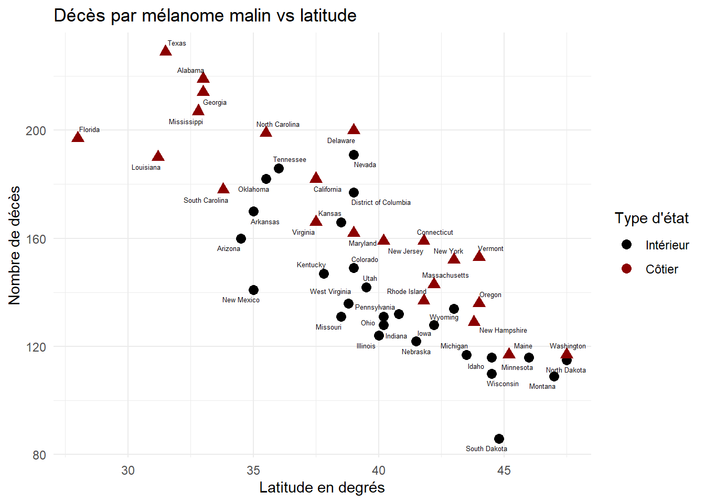

Analyse exploratoire des données
De la théorie à la pratique (TP 1)
Introduction
Ce projet fait partie du cours d’analyse exploratoire des données. L’objectif principal est d’apprendre à utiliser le langage R pour manipuler des données et créer des graphiques. En faisant des exercices pratiques, on découvre comment explorer des données, calculer des statistiques simples et visualiser les informations importantes.
Le projet permet aussi de comprendre les relations entre les variables, par exemple en observant des corrélations ou des tendances dans les graphiques. On apprend à interpréter les résultats et à présenter les données.
Exercice 1
L’une des forces de R est qu’il est capable de traiter de grands jeux de données de manière très rapide. Cet avantage a évidemment son prix : la lecture des données peut paraître ennuyeuse, particulièrement lorsqu’elles se trouvent sur support informatique. Il existe cependant plusieurs possibilités pour lire dans R des données contenues dans un fichier. Si elles se présentent sous la forme d’une liste de valeurs telles que chacune d’elles figure sur une ligne ou si elles sont séparées par un espace, on peut utiliser la commande scan() qui renvoie un vecteur. Lorsque les données se présentent sous la forme d’une table, i.e. une ligne par observation et une colonne par variable, l’instruction à utiliser est read.table() si les données se trouvent dans un fichier texte (ASCII). Des variantes de cette fonction existent comme par exemple read.csv2() 1. Dans cet exercice, nous allons enregistrer dans R les données qui seront utilisées dans le travail pratique. Vous pouvez organiser comme vous le souhaitez votre travail. Néanmoins, nous vous suggérons de créer deux répertoires : l’un contenant les données et l’autre votre travail (script, rapport, résultats). Pour être plus structuré, vous pouvez même ajouter un sous-répertoire à votre répertoire de travail pour y stocker vos graphiques; vous pouvez également créer un projet pour mieux gérer votre travail pratique.
a. Les données que nous allons traiter dans ce travail pratique se trouvent dans la page Moodle du cours. Copiez-les dans votre répertoire de données.
b. Charger les données dans R en utilisant les fonctions scan() et read.table().
c. Pour voir le contenu de l’objet cpus, taper l’instruction
[1] 76 18 22 144 12 185 38 24 45 38 65 141 44 58 12 510 370 66 915
[20] 25 30 66 36 14 26 92 7 36 133 66 24 10 36 100 60 33 40 19
[39] 16 130 62 21 32 64 24 110 11 56 46 136Il en est de même pour examen. Les objets cpus et examen sont de nature toute différente. En effet, le premier est un vecteur, le second un tableau de données, data.frame2 en anglais.
d. Pour accéder à la 17ème composante du vecteur cpus, utiliser la commande
e. Pour obtenir une partie du vecteur cpus comme par exemple les éléments du vecteur compris entre la 5ème et la 21ème composante, taper l’instruction
f. Pour extraire du vecteur cpus ses éléments supérieurs à \(250\), utiliser la commande
g. Il est possible d’accéder directement aux composantes d’une table par le nom. Par exemple, si on veut afficher la composante note de l’objet examen, on peut utiliser la commande
[1] 5.7 4.1 5.9 3.6 3.0 3.8 3.1 NA 5.3 3.0 3.7 4.7 4.0 4.6 4.1 4.2 3.2 3.1 4.7
[20] 4.9 3.7 3.6 4.1 NA 4.3 4.3 NA 3.3 3.6 3.4 NA 1.3 3.3 1.3 3.4 3.8 4.1 4.6
[39] NA 4.0 NA 2.3 3.5 4.0 3.2 3.4 NA 4.0 1.8 4.5 2.9 4.4 NAh. On peut aussi accéder en profondeur aux composantes comme par exemple par la commande
i. La méthode la plus simple pour créer un vecteur consiste à énumérer ses éléments à l’aide de la fonction c() :
[1] 2.9 3.4 3.4 3.7 3.7 2.8 2.1 2.5 2.6 1.5[1] "bleu" "vert" "blanc" "jaune" "noir" j. On peut ôter des composantes d’un vecteur en indiquant entre crochets les indices précédés du signe négatif comme par exemple
k. Finalement, le contenu de votre environnement de travail est affiché à l’aide de la fonction ls().
[1] "couleurs" "cpus" "data_files" "dataDir" "examen"
[6] "mesdonnees"Exercice 2
La performance relative au processeur IBM 370/158-3 de \(50\) processeurs d’ordinateurs a été relevée.
L’objet cpus contient les valeurs observées.
a. Constuire un diagramme branche-et-feuilles, une boîte à moustaches et un histogramme des données observées à l’aide des commandes ci-dessous.
The decimal point is 2 digit(s) to the right of the |
0 | 111111222222223333344444445566666777789
1 | 01334449
2 |
3 | 7
4 |
5 | 1
6 |
7 |
8 |
9 | 21par(mfrow=c(1,2), pty="s")
boxplot(cpus, xlab="performance relative", col="lightskyblue3", horizontal=T)
rug(cpus)
hist(cpus, xlab="performance relative", ylab="fréquence", main="",
col="lightskyblue3") - 1
- Quels sont les effets de cette commande ?

La fonction par() permet de définir des paramètres liés au graphiques
Le paramètre mfrow() permet de diviser la zone de graphique en 1 ligne et 2 colonnes, et pty indique que la forme des graphiques seront des carrés.
- Quel est l’effet de la fonction
rug()?
La fonction rug() permet d’ajoute en dessous du boxplot des petites barres (une par valeur individuelle). Ca permet de voir visuellement où se concentrent les données
Observer les résultats obtenus par chaque commande.
b. Commenter la distribution des valeurs observées en se basant sur les graphiques de la Figure : valeur(s) atypique(s), asymétrie.
En observant les graphiques, on voit que la majorité des 50 processeurs ont une performance relative comprise entre 0 et 100 : la distribution est donc fortement concentrée vers les faibles valeurs. Le boxplot met clairement en évidence plusieurs valeurs atypiques situées beaucoup plus haut, entre environ 200 et 800, correspondant à quelques processeurs nettement plus performants que les autres.
La distribution présente est une asymétrique positive. La queue de la distribution s’étends vers les fortes performances. On peut facilement aperçevoir cette asymétrique dans le boxplot et l’histogramme
c. Calculer la performance relative médiane et la performance relative moyenne des valeurs observées en utilisant les fonctions de R adéquates.
Est-il plus approprié d’utiliser la médiane ou la moyenne ?
La moyenne est fortement influencée par quelques processeurs très performants, ce qui la tire vers le haut. La médiane, moins sensible aux valeurs extrêmes, reflète mieux la performance typique, concentrée entre 0 et 75. Dans ce cas, la médiane est donc plus appropriée que la moyenne pour représenter le centre de la distribution.
d. Déterminer le(s) mode(s) des valeurs observées en complétant les commandes ci-dessous :
e. Que fait la commande suivante ?
summary()est une manière rapide d’avoir un aperçu statistique d’un vecteur ou d’une variable.
Elle fournit des informations comme la valeur minimale, la valeur maximale, la médiane, la moyenne et les quartiles pour les données numériques.
f. Décrire l’effet sur la moyenne et sur la médiane des trois interventions suivantes :
ajouter un processeur de performance relative \(41\);
Effet sur la moyenne : La moyenne sera légèrement abaissée, car la nouvelle valeur 41 est inférieure à l’ancienne moyenne.
Effet sur la médiane : La médiane peut changer légèrement selon la position de cette nouvelle valeur dans l’ordre des données. Ici, elle pourrait devenir 41 ou rester proche de 42, puisque la valeur ajoutée est proche de l’ancienne médiane.
soustraire \(7\) à chaque valeur observée;
Effet sur la moyenne : La moyenne diminue exactement de 7, car on soustrait la même quantité à toutes les observations.
Effet sur la médiane : La médiane diminue également exactement de 7 pour la même raison.
diviser chaque observation par \(3\).
Effet sur la moyenne : La moyenne est divisée par 3, car chaquevaleur est réduite d’un facteur de 3.
Effet sur la médiane : La médiane est également divisée par 3, pour la même raison.
g. Calculer l’écart-type des performances relatives une fois avec les valeurs atypiques et une fois sans en utilisant la fonction sd(). Les valeurs atypiques peuvent être déterminées à l’aide de la fonction boxplot() avec plot=FALSE comme argument.
Que constate-t-on ? L’écart-type est-il un indicateur robuste ?
On constate que l’écart-type est très sensible aux valeurs atypiques. En effet, lorsqu’on ne retire pas les valeurs atypiques, l’écart-type est de 148, soit environ trois fois plus élevé que lorsqu’on les enlève (38). Cela s’explique par le fait que l’écart-type se calcule à partir des carrés des écarts à la moyenne, ce qui amplifie l’effet des valeurs très éloignées.
Ainsi, l’écart-type n’est pas un indicateur robuste: il peut être fortement influencé par quelques valeurs extrêmes.
Exercice 3
Les étudiants suivant un cours de Mathématiques dans une école d’ingénierie ont passé l’examen de fin d’unité. Le cours était donné à \(53\) étudiants répartis en deux groupes notés A et C. Les résultats obtenus figurent dans la table ci-dessous et sont contenus dans l’objet examen.
| Table des notes selon les groupes | |||
| groupe | mode_de_formation | somme | note |
|---|---|---|---|
| A | EE | 47.0 | 5.7 |
| A | EE | 30.5 | 4.1 |
| A | EE | 49.0 | 5.9 |
| A | PT | 26.0 | 3.6 |
| A | TP | 19.5 | 3.0 |
| A | EE | 28.0 | 3.8 |
| A | TP | 21.0 | 3.1 |
| A | PT | NA | NA |
| A | TP | 42.5 | 5.3 |
| A | TP | 19.5 | 3.0 |
| A | TP | 26.5 | 3.7 |
| A | TP | 37.0 | 4.7 |
| A | TP | 29.5 | 4.0 |
| A | EE | 35.5 | 4.6 |
| A | PT | 30.5 | 4.1 |
| A | EE | 32.0 | 4.2 |
| A | EE | 21.5 | 3.2 |
| A | EE | 21.0 | 3.1 |
| A | PT | 36.5 | 4.7 |
| A | EE | 38.5 | 4.9 |
| A | EE | 27.0 | 3.7 |
| A | TP | 26.0 | 3.6 |
| A | EE | 31.0 | 4.1 |
| A | TP | NA | NA |
| A | TP | 32.5 | 4.3 |
| A | PT | 32.5 | 4.3 |
| A | EE | NA | NA |
| A | EE | 22.5 | 3.3 |
| C | TP | 25.5 | 3.6 |
| C | EE | 23.5 | 3.4 |
| C | TP | NA | NA |
| C | EE | 2.5 | 1.3 |
| C | TP | 23.0 | 3.3 |
| C | EE | 3.0 | 1.3 |
| C | EE | 24.0 | 3.4 |
| C | EE | 27.5 | 3.8 |
| C | TP | 31.0 | 4.1 |
| C | EE | 36.0 | 4.6 |
| C | TP | NA | NA |
| C | TP | 29.5 | 4.0 |
| C | EE | NA | NA |
| C | EE | 13.0 | 2.3 |
| C | EE | 24.5 | 3.5 |
| C | TP | 30.0 | 4.0 |
| C | EE | 21.5 | 3.2 |
| C | EE | 23.5 | 3.4 |
| C | EE | NA | NA |
| C | TP | 30.0 | 4.0 |
| C | EE | 8.0 | 1.8 |
| C | TP | 35.0 | 4.5 |
| C | TP | 18.5 | 2.9 |
| C | EE | 34.0 | 4.4 |
| C | EE | NA | NA |
On se demande si une différence significative existe entre les deux groupes à l’examen.
a. Tracer les boîtes à moustaches en parallèle en utilisant les commandes suivantes :

b. Rajouter les bâtonnets des notes des étudiants des deux classes, sur le côté gauche des boîtes à moustaches pour la classe \(A\) (side=2 comme argument de la fonction rug()) et sur le côté droite pour la classe \(C\) (side=4 comme argument de la fonction rug()).

c. En se basant sur la Figure, existe-t-il une différence significative entre les deux groupes à l’examen de fin d’unité ?
En se basant uniquement sur les boxplots, on peut observer que le groupe A semble avoir des notes plus élevées que le groupe C, car la médiane du groupe A est plus haute et la boîte (IQR) se situe globalement à des valeurs plus élevées.
d. Observe-t-on sur les boîtes à moustaches une différence entre les dispersions des deux groupes ?
Les tailles des boîtes semblent assez similaires, donc l’étendue interquartile est comparable pour les deux classes.
e. Calculer les écarts-types des deux groupes à l’aide des fonctions by() et sd().
examen$groupe: A
[1] 0.8093207
------------------------------------------------------------
examen$groupe: C
[1] 0.9800107En se basant sur les écarts-types, existe-t-il une différence en dispersion entre les deux groupes à l’examen de fin d’unité ?
Oui il y a une différence de dispersion entre les deux groupes. Les notes du groupe C sont plus dispersées que celles du groupe A.
f. Que peut-on déduire en comparant les conclusions établies en c., d. et e. ?
On en déduit que les boxplots ne reflètent pas entièrement la dispersion mesurée par l’écart-type, car ils se concentrent sur les 50 % centraux des données et sont peu sensibles aux valeurs extrêmes. Ainsi, des données peuvent sembler avoir une dispersion similaire visuellement, tout en présentant des écarts-types différents.
g. Un autre graphique pour étudier les éventuelles différences entre les deux groupes à l’examen de fin d’unité se trouve dans la Figure.
À votre avis, entre les boîtes à moustaches en parallèle et le graphique tracé ci-dessus, lequel est le plus approprié ?
Chacun a ses avantages : le boxplot permet de visualiser rapidement la médiane et les valeurs atypiques, tandis que le graphique de densité montre la forme complète de la distribution, ce qui est utile pour comparer plusieurs distributions continues.
Si je devais en choisir un, je privilégierais le graphique de densité.
Exercice 4
Une partie de la base de données du recensement américain3 de \(1994\) a été extraite. Elle concerne \(48'842\) personnes adultes dont on s’intéresse notamment à l’influence que peut avoir le type de scolarité, formation acquise par l’individu, sur le nombre d’heures de travail par semaine. Par simplicité et pour préserver l’authenticité du système éducatif américain, le nom des variables n’est pas traduit en français.
a. Nous nous proposons de tracer les boîtes à moustaches en parallèle du temps consacré au travail par les individus recensés. Pour y parvenir, nous utilisons la librairie ggplot24 qu’il faut d’abord installer puis activer dans votre session.
La librairie ggplot2 explicite les liens conceptuels entre graphiques et analyses statistiques. Sa syntaxe est particulière mais ingénieuse. Elle se base sur un ensemble de composants indépendants qui peuvent être combinés de différentes manières5.
Les données du recensement se trouvent dans la librairie arules de R qui doit être installée puis activée.
Les observations sont lues dans le logiciel à l’aide de la commande
et les variables qui nous intéressent sont sélectionnées et stockées dans l’objet dframe par les commandes
Pourquoi ce changement de nom de variable ?
Le changement de nom de variable permet d’éviter l’utilisation du caractère
-, qui est interprété comme un opérateur arithmétique en R. Renommer la variable avec un underscore rend son utilisation plus simple et évite des erreurs de syntaxe.
Tracer les boîtes à moustaches en parallèle de la Figure dans lesquelles est représenté le temps hebdomadaire consacré au travail par les Américains recensés selon leur formation.
n=dim(na.omit(dframe))[1]
today<-format(Sys.time(), "%a %b %d %X %Y")
ggplot(dframe, aes(x=hours_per_week, y=education)) +
geom_point(colour="#FFBA49", alpha=0.1, position="jitter") +
geom_boxplot(outlier.size=0, alpha=0.2) +
theme_bw(base_size=12) +
theme(
legend.position="none",
plot.title=element_text(hjust=0.5, face="bold")) +
labs(
color="",
fill="",
x="hours per week",
y="",
title=paste("Census Income Database (n = ",n,")", sep=""),
#subtitle = "(EE)",
caption = today
)
Peut-on distinguer deux groupes de types de formation dans ce graphique ? Dans l’affirmative, énumérez-les. Dans la négative, expliquez pourquoi on ne parvient pas à séparer les types de formation en deux groupes.
On peut distinguer deux grands groupes de formation, les formations allant de “Preschool” à “12th” et le reste.
On peut voir que les premières formations ont toutes une médiane extrêment proche de Q3 et donc une asymétrique négative, tandis que le reste ont une médiane proche de Q1 et donc une asymétrie positive. On pourrait donc comprendre que le second groupe travail davantage.
b. Calculer la proportion d’observations contenant des valeurs manquantes en utilisant les commandes ci-dessous.
[1] 48842 15[1] 0.3824577c. En se basant sur les boîtes à moustaches en parallèle de la Figure, pour quel type de formation observe-t-on la plus petite dispersion du temps de travail ? Existe-t-il une différence entre les médianes des types de formation ? En donner brièvement la raison.
La plus petite dispersion du temps de travail est trouvé sur le type de formation “5th-6th”.
Non, il n’y a pas une grande différence entre les médianes des types de formation, tous autour de 40h/semaine. Ca peut expliqué car quel que soit le niveau de formation, un grande partie des individus travaillent à temps plain (environ 40h/semaine) et donc homogénise les médianes entre les groupes.
d. Pour chaque type de formation, on peut déterminer puis afficher à l’écran le temps maximal de travail hebdomadaire. Compléter les commandes ci-dessous pour y parvenir.
La formation pour laquelle un temps maximal minimal a été observé se détermine par les commandes
Est-ce surprenant ?
Non pas vraiment. Le niveau “Preschool” est logique. C’est simpliement le groupe avec le moins d’accès à des emplois très exigeants en heures de travail.
e. En s’inspirant des commandes utilisées ci-dessus, déterminer la formation pour laquelle la distribution des temps de travail se caractérise par le plus grand écart-type.
[1] 14.98344[1] "Prof-school"f. Observe-t-on un résultat similaire en utilisant l’étendue interquartiles à l’aide de la fonction IQR()?
[1] 20[1] "11th"Le résultat est différent!

ggplot2
Exercice 5
Estimer et justifier les valeurs des coefficients de corrélation des séries de données à l’aide de leurs graphiques de nuage de points tracés dans la Figure 2, la Figure 3, la Figure 4 et la Figure 5.

On observe une corrélation positive proche de 1. Elle est positive car, plus une valeur sur l’axe x est grande, plus il est probable que la valeur correspondante sur l’axe y soit également élevée. La tendance générale est clairement ascendante, ce qui permet d’estimer la corrélation à environ 0,8.

Ici, les points sont très dispersés et il est difficile de discerner une relation linéaire, ce qui indique une corrélation proche de 0.

La relation suit une forme parabolique, ce qui est exactement le contraire d’une relation linéaire. On peut donc estimer que la corrélation est proche de 0.

Ici, on peut estimer une corrélation d’environ -0,8. La corrélation est négative car, plus une valeur sur l’axe des x est grande, plus il est probable que la valeur correspondante sur l’axe y soit petite. Le nuage de points suit clairement une tendance descendante.
Exercice 6
Une étude a été réalisée en botanique sur \(150\) iris. Cinq variables ont été relevées : la longueur (Sepal.Length) et la largeur (Sepal.Width) des sépales, la longueur (Petal.Length) et la largeur (Petal.Width) des pétales, l’unité utilisée étant le centimètre, ainsi que l’espèce (Species) de la fleur (Setosa, Versicolor et Virginica).

Ces données, qui avaient été récoltées par Edgar Anderson, se trouvent déjà dans R. Pour les utiliser dans votre session actuelle, il suffit de taper dans la console le nom de l’objet, iris, qui les contient.
a. Utiliser les librairies skimr et summarytools pour afficher les sorties qui permettent d’effectuer une analyse exploratoire des données observées. Pour la librairie skimr appliquer la fonction skim() à l’objet iris; appliquer la fonction dfSummary() à l’objet iris pour la librairie summarytools.
| Name | iris |
| Number of rows | 150 |
| Number of columns | 5 |
| _______________________ | |
| Column type frequency: | |
| factor | 1 |
| numeric | 4 |
| ________________________ | |
| Group variables | None |
Variable type: factor
| skim_variable | n_missing | complete_rate | ordered | n_unique | top_counts |
|---|---|---|---|---|---|
| Species | 0 | 1 | FALSE | 3 | set: 50, ver: 50, vir: 50 |
Variable type: numeric
| skim_variable | n_missing | complete_rate | mean | sd | p0 | p25 | p50 | p75 | p100 | hist |
|---|---|---|---|---|---|---|---|---|---|---|
| Sepal.Length | 0 | 1 | 5.84 | 0.83 | 4.3 | 5.1 | 5.80 | 6.4 | 7.9 | ▆▇▇▅▂ |
| Sepal.Width | 0 | 1 | 3.06 | 0.44 | 2.0 | 2.8 | 3.00 | 3.3 | 4.4 | ▁▆▇▂▁ |
| Petal.Length | 0 | 1 | 3.76 | 1.77 | 1.0 | 1.6 | 4.35 | 5.1 | 6.9 | ▇▁▆▇▂ |
| Petal.Width | 0 | 1 | 1.20 | 0.76 | 0.1 | 0.3 | 1.30 | 1.8 | 2.5 | ▇▁▇▅▃ |
Data Frame Summary
iris
Dimensions: 150 x 5
Duplicates: 1
-----------------------------------------------------------------------------------------------------------
No Variable Stats / Values Freqs (% of Valid) Graph Valid Missing
---- -------------- ----------------------- -------------------- --------------------- ---------- ---------
1 Sepal.Length Mean (sd) : 5.8 (0.8) 35 distinct values . . : : 150 0
[numeric] min < med < max: : : : : (100.0%) (0.0%)
4.3 < 5.8 < 7.9 : : : : :
IQR (CV) : 1.3 (0.1) : : : : :
: : : : : : : :
2 Sepal.Width Mean (sd) : 3.1 (0.4) 23 distinct values : 150 0
[numeric] min < med < max: : (100.0%) (0.0%)
2 < 3 < 4.4 . :
IQR (CV) : 0.5 (0.1) : : : :
. . : : : : : :
3 Petal.Length Mean (sd) : 3.8 (1.8) 43 distinct values : 150 0
[numeric] min < med < max: : . : (100.0%) (0.0%)
1 < 4.3 < 6.9 : : : .
IQR (CV) : 3.5 (0.5) : : : : : .
: : . : : : : : .
4 Petal.Width Mean (sd) : 1.2 (0.8) 22 distinct values : 150 0
[numeric] min < med < max: : (100.0%) (0.0%)
0.1 < 1.3 < 2.5 : . . :
IQR (CV) : 1.5 (0.6) : : : : .
: : : : : . : : :
5 Species 1. setosa 50 (33.3%) IIIIII 150 0
[factor] 2. versicolor 50 (33.3%) IIIIII (100.0%) (0.0%)
3. virginica 50 (33.3%) IIIIII
-----------------------------------------------------------------------------------------------------------b. La distribution de la largeur du sépale (Sepal.Width) est-elle plutôt symétrique ?
La distribution de la largeur du sépale est plutôt symétrique, la moyenne et la médiane étant très proches et les valeurs réparties de manière équilibrée autour de la médiane.
c. La distribution de la longeur du pétale (Petal.Length) est-elle unimodale ou bimodale ?
La distribution est bimodale
d. Tracer le nuage de points de la largeur (Petal.Width) versus la longueur (Petal.Length) des pétales des iris en utilisant les librairies ggplot2 et ggforce et en complétant les commandes ci-dessous.
pCol <- c('#057076', '#ff8301', '#bf5ccb')
plot.iris <- ggplot(iris, aes(x = Petal.Length, y = Petal.Width, col = Species)) +
scale_color_manual(values = pCol) +
scale_x_continuous(breaks = seq(0.5, 7.5, by = 1), limits = c(0.5, 7.5)) +
scale_y_continuous(breaks = seq(-0.5, 3, by = 0.5), limits = c(-0.5, 3)) +
labs(title = "Edgar Anderson's Iris Data",
x = "Petal Length",
y = "Petal Width") +
theme(plot.title = element_text(size = 12, hjust = 0.5),
axis.title = element_text(size = 10, vjust = -2),
axis.text = element_text(size = 10, vjust = -2)) +
geom_point(aes(color = Species), alpha = 0.6, size = 3) +
theme_minimal()
plot.iris +
ggforce::geom_mark_ellipse(
aes(fill = Species, label = Species),
alpha = 0.15, show.legend = FALSE
)
e. En se basant sur le graphique de nuage de points, existe-t-il une relation entre la largeur et la longueur des pétales des iris ? Dans l’affirmative, de quelle nature est-elle ?
Oui, on observe une corrélation positive entre la largeur et la longueur des pétales. Cependant, cette corrélation est moins marquée pour l’espèce Virginica que pour les espèces Setosa et Versicolor.
f. Remarque-t-on des observations inhabituelles dans le graphique de nuage de points ?
Non, aucune observation inhabituelle n’est apparente : toutes les données sont bien regroupées selon leurs espèces.
g. Déterminer la corrélation entre la largeur et la longueur des pétales des iris en utilisant la fonction cor().
h. Quelle valeur attribueriez-vous à la longueur des pétales des iris pour distinguer les iris Setosa des deux autres espèces ?
On peut utiliser la règle suivante : si la longueur du pétale est inférieure à 2,5 cm, l’iris appartient à l’espèce Setosa ; sinon, il appartient à l’une des deux autres espèces.
i. Des animations peuvent être créées dans R en utilisant la librairie gganimate. Un exemple peut être conçu en utilisant le code ci-dessous.

j. Installer la librairie reticulate qui permet de faire du Python à partir de RStudio IDE. Fixer ensuite l’interpréteur Python dans la rubrique Python de la boîte de dialogue Options. Cette boîte de dialogue s’affiche à l’écran en utilisant le menu Tools puis Global Options… de RStudio IDE. Si nécessaire, il faut créer un environnement Python et y installer les librairies.

Reconstituer le graphique ci-dessous en utilisant en particulier les librairies pandas, numpy et le module matplotlib.pyplot de la bibliothèque matplotlib de Python.
import pandas as pd import matplotlib.pyplot as plt iris = r.iris colors_map = {'setosa': 'red', 'versicolor': 'green', 'virginica': 'blue'} colors = iris['Species'].map(colors_map) plt.scatter(iris['Petal.Length'], iris['Petal.Width'], c=colors) plt.xlabel('Petal Length') plt.ylabel('Petal Width') plt.title("Iris Petal Length vs Width") plt.show()
Exercice 7
Pour étudier le cancer de la peau (mélanome maligne), des données avaient été relevées auprès d’hommes de population blanche vivant dans les états américains entre \(1950\) et \(1969\). On se demandait si des relations pouvaient exister entre plusieurs variables statistiques telles que les données géographiques (longitude et latitude du centre de chaque état), l’océan (états côtiers ou états intérieurs) et le nombre de décès dus au cancer de la peau; la dernière variable, variable observée dans chaque état américain, est considérée comme variable réponse.
Les données se trouvent dans la librairie HSAUR3 de R qui doit être installée puis activée.
a. Reconstituer en utilisant les librairies ggplot2 et ggrepel de R le graphique de nuage de points ci-dessous entre le nombre de décès dus au cancer de la peau et la latitude. Associée aux points, on a ajouté une couleur différente pour les états côtiers et pour les états intérieurs et une légende indique de quel état il s’agit.
library(HSAUR3)
library(ggplot2)
library(ggrepel)
data("USmelanoma", package = "HSAUR3")
USmelanoma$color <- ifelse(USmelanoma$ocean == "yes", "darkred", "black")
USmelanoma$shape <- ifelse(USmelanoma$ocean == "yes", 17, 16)
ggplot(USmelanoma, aes(x = latitude, y = mortality)) +
geom_point(aes(color = color, shape = factor(shape)), size = 3) +
geom_text_repel(aes(label = rownames(USmelanoma)),
size = 1.7, # taille de police réduite
max.overlaps = 20) +
scale_color_identity(name = "Type d'état", labels = c("Intérieur", "Côtier"), guide = "legend") +
scale_shape_manual(values = c("16" = 16, "17" = 17), guide = "none") +
labs(title = "Décès par mélanome malin vs latitude",
x = "Latitude en degrés",
y = "Nombre de décès") +
theme_minimal()
H
b. En se basant sur le graphique, existe-t-il une relation entre le nombre de décès dus au cancer de la peau et la latitude ?
Il existe une corrélation négative : plus la latitude augmente, moins le nombre de décès est élevé.
c. A-t-on plus de décès dus au cancer de la peau dans les états côtiers ou dans les états intérieurs ?
On voit numériquement que les états côtiers ont plus de décès
d. Tracer le graphique interactif ci-dessous en utilisant la librairie altair de Python.
Conclusion
Ce projet a été très enrichissant et m’a permis d’acquérir les bases du langage R pour l’analyse exploratoire des données. J’ai appris à manipuler des jeux de données, calculer des statistiques et créer différents types de graphiques.
Je me sens maintenant plus à l’aise pour lire, comprendre et interpréter des graphiques, ainsi que pour les produire. La visualisation m’a aidé à repérer tendances, corrélations et différences entre groupes.
J’ai aussi apprécié l’intégration de Python dans R, qui m’a permis d’explorer les données de façon interactive et de découvrir la complémentarité entre ces deux langages.
Dans l’ensemble, ce projet a renforcé mes compétences pratiques en analyse de données et constitue une bonne base pour aller plus loin.
Notes de bas de page
Pour de plus amples informations, voir “R pour les débutants”, E. Paradis, 2005, pages 12–16.↩︎
Pour de plus amples informations, voir “R pour les débutants”, E. Paradis, 2005, pages 12.↩︎
Par intérêt, un coup d’oeil à l’adresse du Gouvernement Américain.↩︎
Une librairie correspondante, plotnine, a été mise à disposition des utilisateurs de Python.↩︎